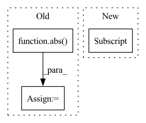

Pattern ID :39649
Before Change
self.inherit_attributes(init_data)
def separate_positive_negative(self):
A_abs = sp.lil_matrix(abs( self.A) )
A = sp.lil_matrix(self.A)
A_p_scipy = (A_abs + A)/2
A_n_scipy = (A_abs - A)/2
self.edge_index_p = LongTensor(np.array(A_p_scipy.nonzero()))
self.edge_weight_p = FloatTensor(sp.csr_matrix(A_p_scipy).data)After Change
self.edge_index_p = self.edge_index[:,ind]
self.edge_weight_p = self.edge_weight[ind]
ind = self.edge_weight < 0
self.edge_index_n = self.edge_index[:,ind]
self.edge_weight_n = - self.edge_weight[ind]
self.A_p = to_scipy_sparse_matrix(self.edge_index_p, self.edge_weight_p)
self.A_n = to_scipy_sparse_matrix(self.edge_index_n, self.edge_weight_n)
In pattern: SUPERPATTERN
Frequency: 4
Non-data size: 3
Instances Fragment ID: 112724248
Project Name: sherylhyx/pytorch_geometric_signed_directed
Commit Name: 1e4df62c104487ca2a010c9efe1287cba3106b3d
Time: 2022-02-13
Author: He_YX@outlook.com
File Name: torch_geometric_signed_directed/data/signed/SignedData.py
M Class Name: SignedData
N Class Name: SignedData
M Method Name: separate_positive_negative(1)
N Method Name: separate_positive_negative(1)
M Parent Class: Data
N Parent Class: Data
M File Name: torch_geometric_signed_directed/data/signed/SignedData.py
N File Name: torch_geometric_signed_directed/data/signed/SignedData.py
M Start Line: 69
M End Line: 79
N Start Line: 67
N End Line: 74
Before Change
Concatenate two noise batches of potentially different lengths
// pad shorter batch to correct length
pad = (0, abs( len(noise_batch) - len(added_noise)) )
if len(noise_batch) > len(added_noise):
added_noise = torch.nn.functional.pad(added_noise, pad)
added_lens *= len(added_noise) / len(noise_batch)
else:
noise_batch = torch.nn.functional.pad(noise_batch, pad)
noise_lens *= len(noise_batch) / len(added_noise)After Change
// pad shorter batch to correct length
noise_tensor_len = noise_batch.shape[1]
added_tensor_len = added_noise.shape[1]
pad = (0, abs(noise_tensor_len - added_tensor_len))
if noise_tensor_len > added_tensor_len:
added_noise = torch.nn.functional.pad(added_noise, pad)
added_lens = added_lens * added_tensor_len / noise_tensor_len Fragment ID: 112724250
Project Name: speechbrain/speechbrain
Commit Name: be90d151c2c58a71bd9650cfdda902e5c6e5b76a
Time: 2020-06-08
Author: plantinga.peter@gmail.com
File Name: speechbrain/processing/speech_augmentation.py
M Class Name: AddNoise
N Class Name: AddNoise
M Method Name: _concat_batch(4)
N Method Name: _concat_batch(5)
M Parent Class: torch.nn.Module
N Parent Class: torch.nn.Module
M File Name: speechbrain/processing/speech_augmentation.py
N File Name: speechbrain/processing/speech_augmentation.py
M Start Line: 214
M End Line: 227
N Start Line: 219
N End Line: 230
Before Change
bin_low = bins[i]
bin_high = bins[i+1]
d1 = abs(bin_low - target.item())
d2 = abs( bin_high - target.item())
output = torch.tensor(output,dtype=torch.float32, device=self.device,requires_grad=True)
target = torch.tensor(target,dtype=torch.float32, device=self.device, requires_grad=True)
bin_high = torch.tensor(bin_high,dtype=torch.float32, device=self.device, requires_grad=True)
bin_low = torch.tensor(bin_low,dtype=torch.float32, device=self.device, requires_grad=True)After Change
if target.item() != 0:
if target.item()>bins[i] and target.item()<=bins[i+1]:
bin_low[ind] = bins[i]
bin_high[ind] = bins[i+1]
else:
if target.item()>=bins[i] and target.item()<=bins[i+1]:
bin_low[ind] = bins[i] Fragment ID: 112724272
Project Name: atmacvit/bincrowd
Commit Name: acb86088468ea073cb8983f27fa97db906f87933
Time: 2021-07-20
Author: khamkarmansi@gmail.com
File Name: optimization/log_loss.py
M Class Name: Log_Loss
N Class Name: Log_Loss
M Method Name: forward(5)
N Method Name: forward(4)
M Parent Class: Module
N Parent Class: Module
M File Name: optimization/log_loss.py
N File Name: optimization/log_loss.py
M Start Line: 12
M End Line: 39
N Start Line: 9
N End Line: 30
Before Change
residuals[model.target[window].mask] = np.nan
vlim = np.nanmax(np.abs(residuals))
if vlim > (3 * abs(np.nanmin(residuals))):
vlim = abs( np.nanmin(residuals))
imshow_kwargs = {
"extent": window.plt_extent,
"cmap": cmap_div,After Change
)
if model.target.masked:
residuals[model.target[window].mask] = np.nan
residuals = np.arctan(residuals/(iqr(residuals[np.isfinite(residuals)] , rng = [10,90])*2))
extreme = np.max(np.abs(residuals[np.isfinite(residuals)]))
imshow_kwargs = {
"extent": window.plt_extent, Fragment ID: 112724277
Project Name: connorstoneastro/autoprof
Commit Name: 65823f6a1204bd4fb7682e22fd534ff912800bfa
Time: 2022-11-14
Author: connorstone628@gmail.com
File Name: autoprof/plots/image.py
M Class Name: AnonimousClass
N Class Name: AnonimousClass
M Method Name: residual_image(5)
N Method Name: residual_image(5)
M Parent Class:
N Parent Class:
M File Name: autoprof/plots/image.py
N File Name: autoprof/plots/image.py
M Start Line: 83
M End Line: 93
N Start Line: 83
N End Line: 106